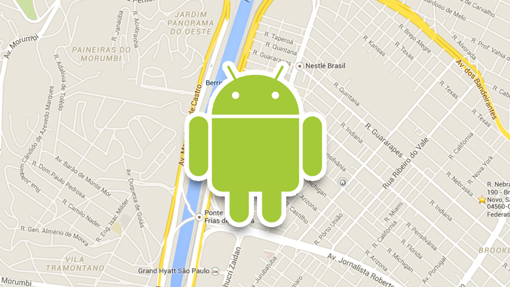

Google maps V2 no Android
Adicionando Google Maps V2 em um projeto Android

Vamos ver como inserir o Google Maps V2 em um projeto Android.
Adicionando as permissões no AndroidManifest
Antes de mais nada vamos adicioanr as permissões nescessárias, uses-permission, ao nosso arquivo AndroidManifest.xml dentro da tag
<uses-permission android:name="android.permission.INTERNET"/>
<uses-permission android:name="android.permission.ACCESS_NETWORK_STATE"/>
<uses-permission android:name="android.permission.WRITE_EXTERNAL_STORAGE"/>
<!-- Esses dois não são obrigatórios para a V2 do Google Maps mais são recomendados -->
<uses-permission android:name="android.permission.ACCESS_COARSE_LOCATION"/>
<uses-permission android:name="android.permission.ACCESS_FINE_LOCATION"/>
Adicionar o Google Play service no seu aplicativo dentro da tag
<meta-data
android:name="com.google.android.gms.version"
android:value="@integer/google_play_services_version" />
Vamos criar um certificado para utilizar a API do Google Maps V2
Entre no Google Developer Console
Dentro do seu projeto clique em APIs no menu esquerdo e habilite o Google Maps Android API v2

Pegue o certificado SHA1 de desenvolvimento para gerar sua API Key
Digite no terminal:
$ keytool -list -v -keystore ~/.android/debug.keystore -alias androiddebugkey -storepass android -keypass androidAgora no menu esquerdo vá em Credentials e crie uma nova chave de API para Android

No popup insira a chanve SHA1 junto do nome do seu aplicativo separados por um ; (ponto e virgula)

Adicione a API Key no AndoirManifest
<meta-data android:name="com.google.android.maps.v2.API_KEY" android:value="COLOQUE_AQUI_SUA_API_KEY"/>
Adicione o mapa na sua activity
<fragment xmlns:android="http://schemas.android.com/apk/res/android"
android:id="@+id/map"
android:layout_width="match_parent"
android:layout_height="match_parent"
android:name="com.google.android.gms.maps.MapFragment"/>
Pronto agora já é só compilar o projeto e temos nosso mapa na Activity principal.